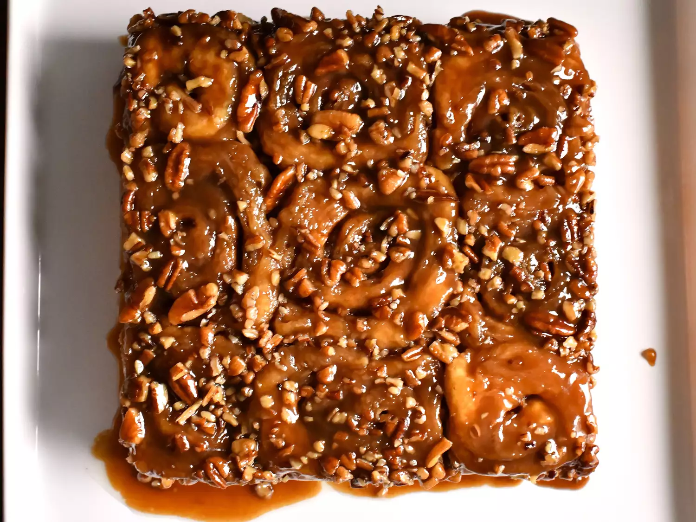

Caramel Rolls

Description
Caramel rolls are my absolute favorite thing on earth.
They're perfect for all holiday mornings!
Ingredients
Dough:
- ¾ cup water
- 2 tablespoons butter
- 2 cups white bread flour
- 2 tablespoons white sugar
- 1 ½ tablespoons nonfat dry milk powder
- 1 teaspoon fast-rising dry yeast
- ½ teaspoon salt
Sauce:
- ½ cup brown sugar
- ¼ cup light corn syrup
- ¼ cup butter
- ¼ cup chopped pecans (Optional)
Filling:
- ¼ cup butter, softened
- ½ teaspoon ground cinnamon
Steps
-
Make dough:
Combine water, butter, bread flour, white sugar, milk powder, yeast, and salt,
in that order, in the bucket of a bread machine. Select the Dough cycle.
Remove dough from the machine after the cycle is done, about 1 hour 45 minutes.
-
Meanwhile, make sauce:
Combine brown sugar, corn syrup, and butter in a saucepan over medium heat.
Cook and stir until sugar is dissolved, about 3 minutes.
Pour sauce into an 8-inch square baking pan. Sprinkle with pecans and set aside.
-
Fill dough:
Turn dough out onto a floured surface, punch it down, and roll into an 8x12-inch rectangle.
Dot with butter and sprinkle with cinnamon. Roll up and pinch seams together.
Slice roll into 9 equal pieces, about 1 1/3-inches thick; place cut-side down into the baking
pan on top of pecans. Set aside until rolls are doubled in size, about 1 hour.
-
Preheat the oven to 375 degrees F (190 degrees C).
-
Bake rolls in the preheated oven until golden brown, 20 to 25 minutes.
Cool in the pan for no more than 3 minutes; invert a serving platter on top of the pan,
then turn over. Carefully remove the pan to release rolls and allow pecan sauce to flow over rolls.